‹
›
Crop prices change with season, supply and local market conditions, which makes them hard to forecast. Understanding these patterns helps farmers, traders and policymakers.
PriceHarvest analyses daily Modal Prices for 5 crops in 5 Maharashtra cities (Jan 2021 – Jun 2026) from the Agmarknet Portal, Government of India. That gives 25 City–Crop series: 19 from government records and 6 synthetic.
Machine-learning models (XGBoost and LightGBM) forecast the next 30 days. It is a decision-support tool, not a guarantee of future prices.
Daily trends, monthly and yearly patterns, crop-wise and city-wise comparison, volatility (CV %), moving averages and outlier checks across all 25 City–Crop series. Synthetic series are marked in every chart.
Per-series XGBoost and LightGBM models plus one Global Cross-Series LightGBM learn from lagged prices, rolling statistics and Fourier seasonality. Each series gets the model that validates best, and a 30-day forecast is produced recursively with a p10–p90 price range.
Side-by-side price levels and volatility for Mumbai, Nashik, Nagpur, Kolhapur and Ratnagiri, with synthetic series clearly separated from government data.
Pick a city and crop on the Predict page for the expected 30-day price range, explore each crop in the interactive Tableau dashboard, and ask the AI chatbot questions in English, Hindi or Marathi.
Daily wholesale market records from the Agmarknet Portal, Government of India — January 2021 to June 2026. 87,453 raw rows → 80,587 after cleaning. 19 series are government records; 6 are synthetic history.
| Column | Description | Format / Values |
|---|---|---|
Arrival_Date |
Date of market price record | dd/mm/yyyy |
City |
One of 5 cities | Mumbai / Nashik / Nagpur / Kolhapur / Ratnagiri |
Crop |
One of 5 crops | Onion / Tomato / Potato / Spinach / Cabbage |
Market |
APMC / mandi name | As reported |
Grade |
Commodity grade | As reported |
Min_Price |
Minimum price on that day | ₹/Quintal |
Max_Price |
Maximum price on that day | ₹/Quintal |
Modal_Price |
Most common transaction price (forecast target) | ₹/Quintal |
See how raw prices actually behave — trends, city and crop differences, seasonality and volatility. Filter by category and click any chart to expand. Dashed lines mark synthetic series. Prices are in ₹/Quintal.
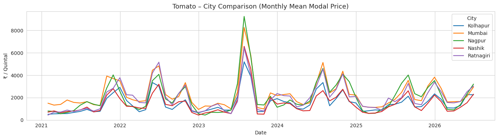
All five cities spike together in mid-2023 — evidence of shared price movement across markets.
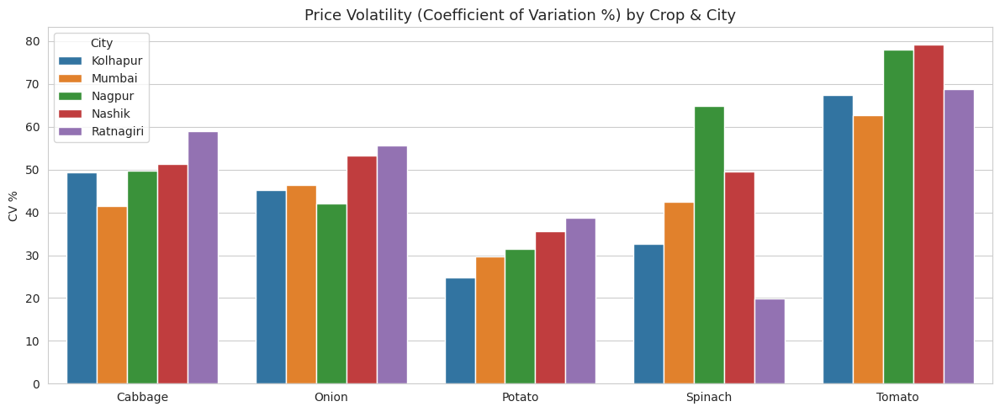
Tomato is the most volatile everywhere (CV 62.8–79.3%). Potato is the steadiest crop.
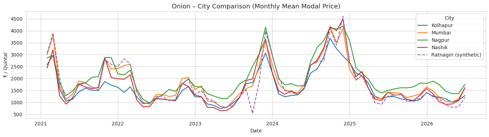
Nagpur has the highest mean Onion price (₹2,038/Qtl); peaks in late 2023 and late 2024 appear in every city.
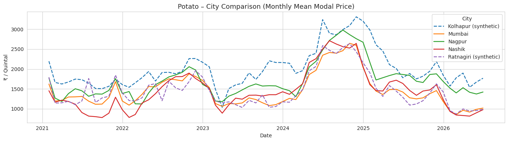
Dashed lines are synthetic series (Kolhapur, Ratnagiri). Real series stay in a narrow band.
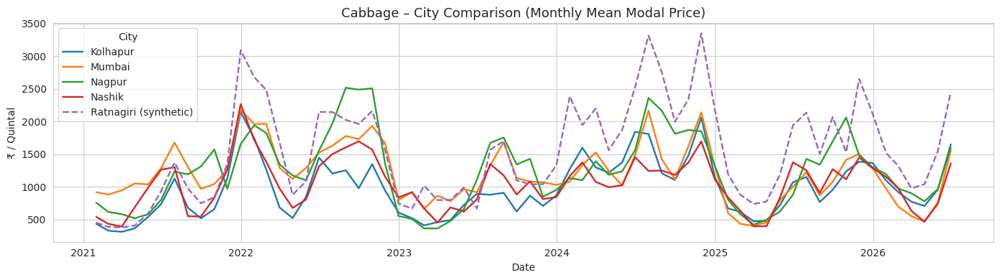
Ratnagiri (synthetic) runs above the real cities; the other four track each other closely.
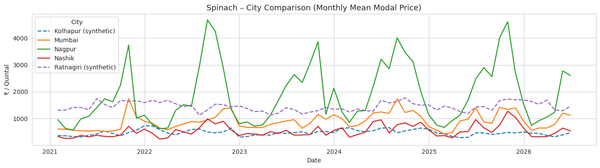
Nagpur is far above every other city and spikes sharply; Nashik and Kolhapur stay low.
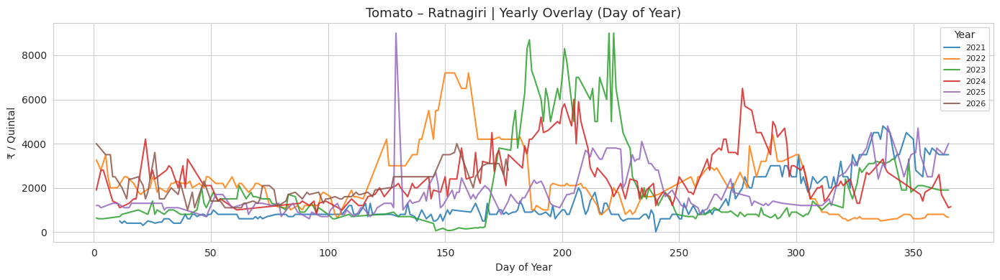
Overlaying each year by day-of-year exposes irregular, year-specific spikes rather than a clean repeat seasonal cycle.
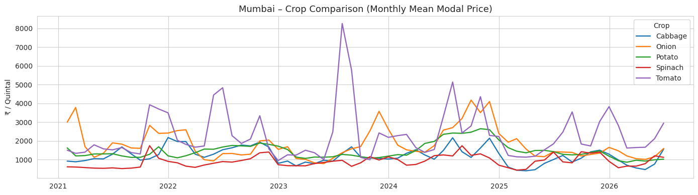
Tomato dominates the volatility in Mumbai; Potato and Cabbage stay comparatively flat.
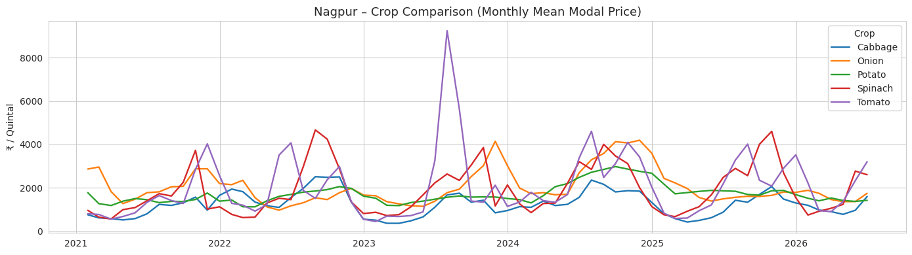
Spinach and Tomato both show large swings in Nagpur; Onion has broad annual humps.
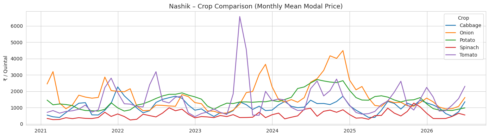
Tomato spike in mid-2023 and Onion peaks in late 2023 / late 2024 are clearly visible.
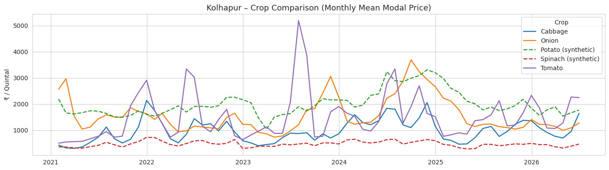
Dashed lines (Potato, Spinach) are synthetic history.
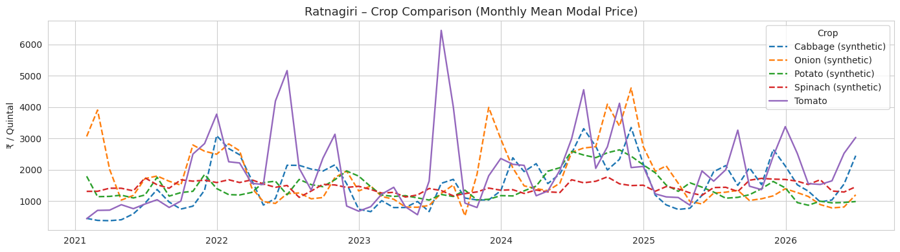
Only Tomato is real government data here; the other four crops are synthetic (dashed).
Key takeaways from the raw price behaviour above — before any machine learning.
Tomato CV is 62.8–79.3% in every city, with daily prices up to ₹12,000/Qtl (Nagpur) and a sharp cross-city spike in mid-2023.
Potato has the lowest CV of the five crops: 29.8–35.6% on the real series (24.8–38.7% including synthetic Kolhapur and Ratnagiri).
Nagpur Spinach averages ₹1,900/Qtl (CV 64.8%) versus ₹537 in Nashik and ₹901 in Mumbai — the widest city gap of any crop.
All five cities peak together in late 2023 and late 2024. Nagpur has the highest mean Onion price at ₹2,038/Qtl.
Mumbai Tomato has the highest mean modal price of all 25 series at ₹2,305/Qtl, followed by Nagpur Tomato (₹2,060) and Nagpur Onion (₹2,038).
Ratnagiri (Cabbage, Onion, Potato, Spinach) and Kolhapur (Potato, Spinach) use synthetic history. They are tagged everywhere and never presented as government data.
10 rows above 10× the series median were dropped, including one Nashik Onion record of ₹917,588,483/Qtl.
Ratnagiri series had 44–46% of days gap-filled in the EDA (≤10-day linear interpolation); Kolhapur Spinach 52.9%.
Explore each crop interactively — price trends, city comparisons, seasonality and volatility — with crop, city, market and time-period filters.
Machine-learning models trained on the same history forecast the next 30 days for all 25 city–crop series and beat a simple baseline on most of them.